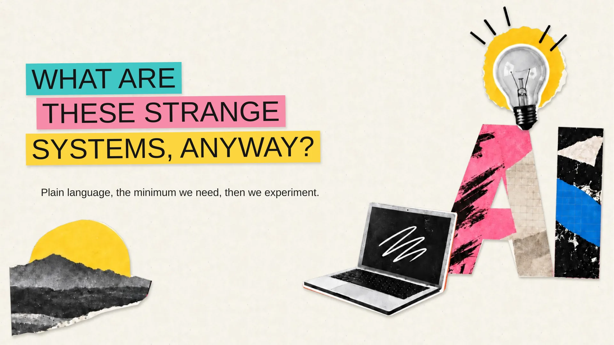

The day · 9:15 to 9:40
What are these strange systems, anyway?
A plain-language introduction to how generative AI systems compose outputs, and the minimum technical background we need to make informed decisions about them. Then we experiment and see what happens.
